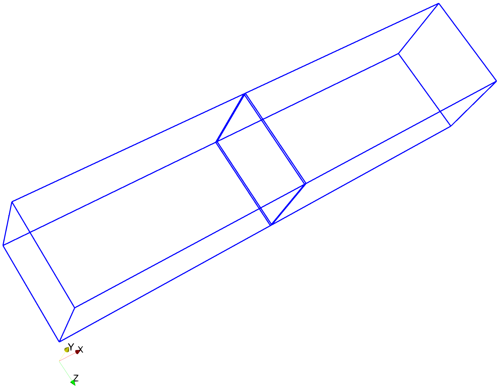
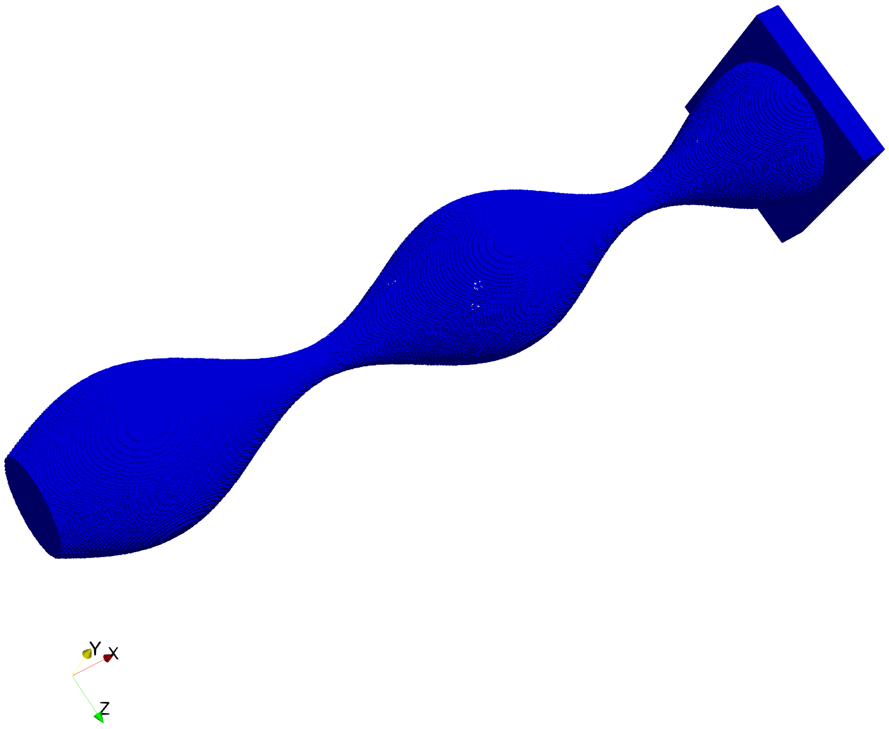
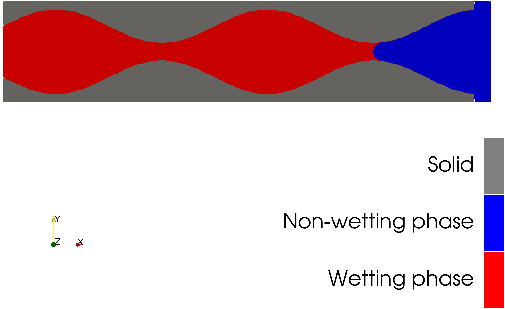

Drainage of an Ink Bottle
This example demonstrates a morphological drainage simulation of an ink bottle using PMMoTo. A morphological drainage simulation uses morphologic methods such as erosion and dilation to approximate equilibrium states of the displacement of a wetting phase by a non-wetting phase in a porous structure. For the simulation, a porous structure and capillary pressure are specified and the equilibrium state (as a multiphase image) and wetting-phase saturation is output. Two drainage approaches are examined in this example:
A standard morphological approach [1]
An extension to the standard approach where the contact angle can be specified [2]
To run this example:
mpirun -np 2 python examples/drainage_inkbottle/drainage_inkbottle.py
Step 1: Import Modules
This script requires MPI for parallelism, however, pmmoto handles all communication. numpy is needed to generate an list of capillary pressures for the simulations and matplotlib is used for plotting.
from mpi4py import MPI
import numpy as np
import matplotlib.pyplot as plt
import pmmoto
Step 2: Initialize PMMoTo
To initialize PMMoTo, several parameters must be specified:
voxels: the number of voxels in each dimension for the image representing the porous structurereservoir_voxels: the number of voxels added to the inletsubdomains: the number of subdomains in each dimensionboundary_types: the boundary conditions applied during the simulationinletandoutlet: the designated inflow and outflow facesbox: the physical size of the simulation domainrank: the MPI rank of the current process
These parameters collectively define the system’s geometry, boundary conditions, and how it is partitioned across processes for the morphological drainage simulation.
# Domain voxel resolution.
# Must be a 3-tuple as only 3D is currently supported.
voxels = (560, 120, 120)
# Number of voxels allocated for the inlet reservoir region.
reservoir_voxels = 20
# Domain decomposition across MPI ranks.
# The product of subdomain counts must match the number of MPI processes.
subdomains = (2, 1, 1)
# Physical extent of the domain in each dimension: (min, max)
box = (
(0.0, 14.0), # x-dimension
(-1.5, 1.5), # y-dimension
(-1.5, 1.5), # z-dimension
)
# Boundary conditions for each face (−, +) per axis.
# Options:
# - END: Nothing assumed
# - WALL: Solid, impermeable boundary added to image
# - PERIODIC: Wraparound — both faces of the axis must be periodic
boundary_types = (
(pmmoto.BoundaryType.END, pmmoto.BoundaryType.END), # x
(pmmoto.BoundaryType.END, pmmoto.BoundaryType.END), # y
(pmmoto.BoundaryType.END, pmmoto.BoundaryType.END), # z
)
# Inlet boundary condition: (−, +) per axis
# Used to specify where fluid enters the domain
inlet = (
(False, True), # x: fluid enters from the +x face
(False, False), # y: no inlet
(False, False), # z: no inlet
)
# Outlet boundary condition: (−, +) per axis
# Used to specify where fluid exits the domain
outlet = (
(True, False), # x: fluid exits from the −x face
(False, False), # y: no outlet
(False, False), # z: no outlet
)
sd = pmmoto.initialize(
voxels=voxels,
box=box,
boundary_types=boundary_types,
rank=rank,
subdomains=subdomains,
inlet=inlet,
outlet=outlet,
reservoir_voxels=reservoir_voxels,
)
The outline of the domain, which consists of two subdomains, is shown below:
{kind=link}
Step 3: Generate Ink Bottle Geometry
The porous structure for this example is an ink bottle as described in [3] and is constructed by a surface of revolution around the x axis, where the radius of the cross section, r(x), is
A voxel is labeled as a pore voxel (i.e., assigned a value of 1) if the radial distance of its centroid from the x-axis is less than r(x).
The domain_generation module in PMMoTo provides the PorousMedia object and includes functionality to generate the ink bottle geometry.
pm = pmmoto.domain_generation.gen_pm_inkbottle(sd)
The pore voxels and reservoir voxels for the ink bottle:
{kind=link}
Step 4: Initialize Multiphase System
A drainage simulation estimates the equilibrium state of a multiphase system, where two immiscible fluids occupy the pore space. A Multiphase object is initialized, and the pore space is initially filled with the wetting phase (fluid ID = 2).
mp = pmmoto.domain_generation.gen_mp_constant(pm, 2)
Step 5: Define Capillary Pressure Range
Multiple equilibrium states exist for most multiphase systems, and they depend on the porous structure as well as the properties and interactions of the fluids. In the standard morphological approach, the contact angle is restricted to zero, and the resulting equilibrium states are determined by the capillary pressure and the surface tension.
A sequence of capillary pressures is created that are designed to capture behavior for the ink bottle geometry.
capillary_pressure = 0.1 + np.linspace(0, 1, 41) ** 1.5 * 7.6
Step 6: Perform Standard Morphological Drainage
To perform the simulation, the following parameters are needed:
Multiphase: object that includes the initial fluid configuration.capillary_pressure: capillary pressures used to determine equilibrium states.gamma: surface tension, with units \(\mathrm{mass}/\mathrm{seconds}^2\).method: specifies which drainage approach to use.save: where to save theMultiphaseimage at every capillary pressure.
The output of this function is the predicted equilibrium saturation at a given capillary pressure.
w_saturation_standard = pmmoto.filters.equilibrium_distribution.drainage(
mp, capillary_pressure, gamma=1, method="standard", save=False
)
Step 7: Save Images
When save=False, the Multiphase image is only available at the last provided capillary pressure. Both the PorousMedia and Multiphase images can be accessed via the .img attribute, which contains the corresponding numpy arrays. These are passed to the save_img function as well as a file_name and the Subdomain object.
pmmoto.io.output.save_img(
file_name="examples/drainage_inkbottle/image",
subdomain=sd,
img=pm.img,
additional_img={"mp_img": mp.img},
)
A cross-section of the multiphase image which depicts the fluid configuration at the last capillary pressure is shown below:
{kind=link}
Step 8: Drainage with Contact Angle
The other available approach is an extension of the standard morphological method and allows for specification of the contact angle between the solid and fluid phases. First, we refill the pore space with the wetting fluid (fluid id = 2) and run the contact angle model where we set contact_angle to 20° and change the method.
mp = pmmoto.domain_generation.gen_mp_constant(pm, 2)
w_saturation_contact_angle = pmmoto.filters.equilibrium_distribution.drainage(
mp, capillary_pressure, gamma=1, contact_angle=20, method="contact_angle"
)
Step 9: Plot Results
To assess the impacts of contact angle and compare the wetting-phase saturations predicted by the two methods, a plot is generated.
if rank == 0:
plt.plot(w_saturation_standard, capillary_pressure, ".", label="Standard Method")
plt.plot(w_saturation_contact_angle, capillary_pressure, ".", label="Contact Angle Method")
plt.xlabel("Wetting Phase Saturation")
plt.ylabel("Capillary Pressure")
plt.legend()
plt.savefig("examples/drainage_inkbottle/saturation_pressure_plot.png")
plt.close()
{kind=link}
Output
The expected output from a successful run is:
image.pvtiand a folderimage_procwith two.vtifiles which can be opened in Paraviewsaturation_pressure_plot.png: Plot of capillary pressure vs. saturation.
The code used to generate the plots in this example is located at examples/drainage_inkbottle/plot_drainage_inkbottle.py and must be run with pvpython, ParaView’s Python interpreter.